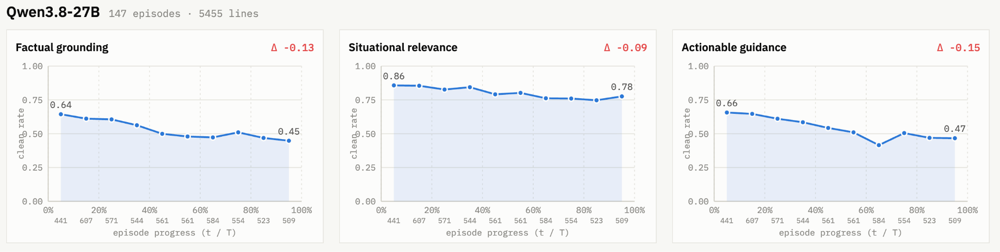
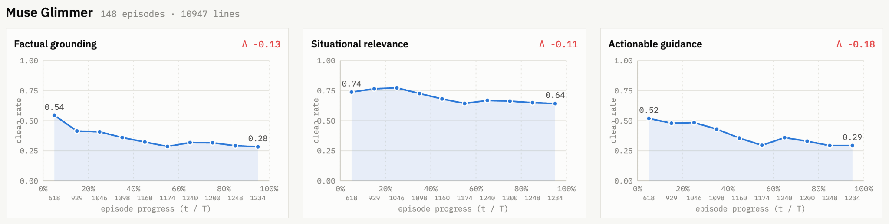

Skilled cook; prefers less interruption
Top-downEgocentric
Visual assistants that support users during ongoing physical tasks require evaluation in closed loop, where assistant responses can change subsequent user behavior and task outcomes. Existing benchmarks largely rely on offline replay and therefore cannot capture these effects. We introduce Interactive Visual Gym, a framework for closed-loop evaluation and training of visual assistants through joint simulation of executable task environments and human users. We contribute three simulators that recreate everyday tasks and human-aligned action spaces across cooking, household manipulation, and mobile-interface domains, together with a persona-conditioned user simulation harness that collaborates with the assistant while incorporating controlled execution errors and other out-of-plan behaviors. We instantiate the framework as the IVG-Bench benchmark with 315 interaction episodes. Evaluating state-of-the-art VLMs as visual assistants reveals substantial limitations: the best-performing model, GPT6-Astra, completes only 44.2% of tasks within the time limit, exhibits significant weaknesses in factual grounding and actionable guidance, and is often too slow to prevent errors in time. We further show that the environments provide useful learning signals: in a proof-of-concept GRPO experiment, closed-loop training improves both task success and interaction behavior.
Here we briefly discuss the features of our environment simulation and user simulation, which jointly support rollouts to test visual assistant capabilities.
Simulating everyday tasks. Our environment simulators simulate procedural physical tasks in three different domains: cooking, household activities, and mobile interface use. Example tasks for each environment are shown below.
Human-communicable action space. Unlike most embodied AI simulators, our simulators support an action space at a more abstract semantic level, referring to objects and intended operations. This is closer to how humans communicate—you would not typically tell someone to “move forward one meter”—and hence more suitable for visual assistants that aim to assist humans.
Ground references“The pan on your left” → an object identifier
Execute actionsSemantic action → low-level controls
We implement the simulated user as a VLM agent. We design a harness that enables it to plan and act independently in the environment while responding to assistant guidance. It also supports two unique features:
Scheduled out-of-plan events. We introduce scheduled out-of-plan events in all three simulators that require the assistant to respond to execution errors, questions, and intentional plan changes. Examples are shown below.
During normal execution, the simulated user controls its own actions and communication. To insert these behaviors, we need to inject the appropriate action sequence at the right moment while keeping the conversation consistent with the user’s behavior. We implement this as follows:
Persona-conditioned users. Real-world users differ in how they perform tasks and respond to assistance. We operationalize this diversity through four representative axes: skill level, trust in AI, execution speed, and interruption preference, each with three levels.
The example below shows how users with two different personas behave differently.


Yes! Training Qwen3.5-4B with GRPO in our environments, using a separate set of training tasks, improves task success and interaction quality.
We examine this through a human study and find broadly similar behavior. The main difference is in communication: VLM-based users speak much more frequently and are more polite than human participants.
Performance remains relatively stable when switching between GPT and Gemini models. It varies substantially with the open-weight models we tested, which often struggle to follow the instructions required to serve as simulated users.